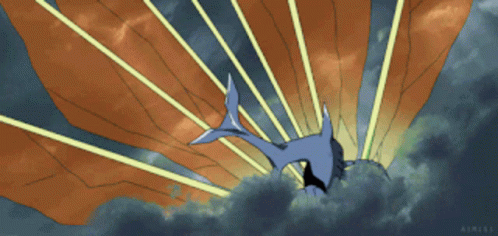
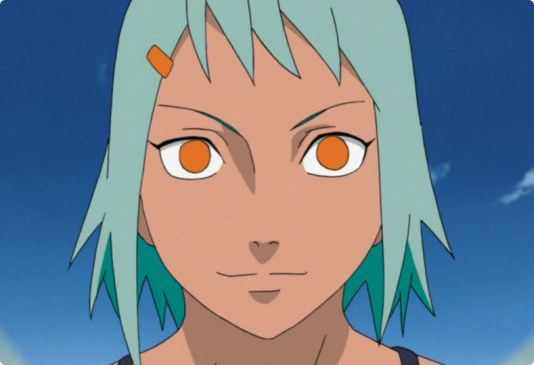

Chomei
Jinchūriki: FūChōmei (重明, Chōmei), mais conhecido como Sete-Caudas (七尾, Nanabi, Shichibi), é uma das nove Bestas com Cauda. No passado ele foi selado dentro de Fū de Takigakure.
 Chōmei parece ter uma personalidade humorada — a qual aparentemente é compartilha com a sua jinchūriki, como mostrado quando ele se apresentou para Naruto, referindo-se a si mesmo como "Chōmei, o Sétimo Sortudo" (ラッキーセブン重明, Rakkī sebun Chōmei), que pode ser uma alusão ao fato de que ele tem sete caudas e o número sete é visto como um número de sorte, bem como um número feliz. Ele também tem o hábito de usar a palavra sorte na conversa, refletindo a sua personalidade
O relacionamento de Chōmei com sua jinchūriki, Fū, é desconhecido no mangá. Mas no anime, devido a kunoichi ter acesso a uma certa parte dos poderes de Chōmei, além de suas mentalidades bem humoradas serem muito semelhantes, sugere que ele não tinha uma total má vontade para com sua ex-hospedeira bem como detinham algum nível de cooperação.
Fū não possui nenhuma frase que poderia ser marcada.
- Afiliação:Vila Oculta da Cachoeira
- Caudas: Sete-Caudas
- Classificação: Besta com Cauda
- Família: Hagoromo Ōtsutsuki
- Jinchūriki: Fū